Intro
Greetings! 🌟 Hello, I’m Chirag Panchal, a Master’s student in Data Science and Analytics at Florida Atlantic University. With a strong background in data analysis, statistical modeling, and problem-solving, I’m focused on building the skills to draw meaningful insights from complex data. My interest in transforming data into useful strategies has driven me to explore new techniques and work on hands-on projects throughout my studies.
I have practical experience in a range of data projects, from implementing key algorithms to creating interactive dashboards with tools like Tableau. Whether it’s improving algorithms or visualizing economic trends, I’m committed to putting my knowledge to work in real-world situations.
Outside of academics, I stay engaged with new developments in data science because I believe continuous learning is essential in this fast-moving field. As I continue building my expertise, I aim to contribute to data-driven solutions that help businesses improve and innovate. This portfolio highlights my journey, skills, and passion for data science as I work toward a future in analytics and strategic decision-making.
Work Experience
FAU Student Government Broward Campuse
Speaker Pro TemporeApril 2024 – October 2024
• Led and organized key campus events, including Speak and Succeed, Chinese New Year, and Red and Blue Day of Service, driving an 11.01% increase in campus engagement.
• Facilitated budget management and allocation for events, ensuring optimal use of resources in alignment with organizational goals.
• Conducted and led meetings, collaborated with student leaders, and drafted statutes and constitutional amendments as part of the legislative branch.
• Applied data analytics to assess event impact and budget effectiveness, leveraging insights to enhance student engagement and align initiatives with student needs.
Tops Technologies Pvt. Ltd
Data Analyst Intern May 2023 – Dec 2023
• Conducted data analysis to support project insights, identifying key patterns and actionable information.
• Applied statistical techniques and data visualization methods to inform project strategies and decisions.
• Collaborated with team members to implement data-driven solutions, improving project accuracy and efficiency.
• Gained skills in Power BI, Tableau, machine learning, AI, and deep learning during the internship.
Vodafone Idea Private Limited
Intern( It-Support Team )Jan 2023 – April 2023
• Collaborated with teams from IBM and TCS to address backend data management, log analysis, and network issues, ensuring seamless operations of critical software applications.
• Worked directly with customer issues, analyzing large volumes of network and log data to identify root causes and improve system reliability.
• Provided insights on data patterns and system performance, contributing to proactive solutions for potential network and application issues, enhancing customer satisfaction by reducing downtime and resolving problems efficiently.
Tops Technologies Pvt. Ltd
Java Development Intern May 2021 – Dec 2022
• Applied scripting knowledge to enhance Java-based development projects, focusing on improving functionality and efficiency.
• Successfully met demanding development objectives within tight deadlines, delivering high-quality, efficient code.
• Solved complex technical challenges using an analytical approach, resulting in optimized project outcomes.
Project
Research Project
1. Brief study on deep Convolution models for intracranial Haemorrhage Segmentation
U-Net, U-Net++ ,Linknet, ResuNet, Python , Machine learning , Image Processing
• Conducted a study on automated segmentation of intracranial hemorrhage (ICH) using deep learning techniques, significantly enhancing accuracy and efficiency in radiological diagnostics.
Driver Drowsiness Detection
Numpy, Scikit-learn, Dlib, pyttsx3, OpenCV
• Python programming language to build a system to detect when a driver is feeling drowsy and alert them using an alarm.
• Using OpenCV and dlib to detect face. pyttsx3 to generate voice alert.
• numpy and scipy to calculate eucledian distance to compute the Eye Aspect ratio.
Handwritten digit recognition using neural network
Python, MNIST, Tensorflow
• In this project I developed a neural network model capable of accurately recognizing and classifying handwritten digits from images.
• I utilized activation function ReLU and softmax which helps for classification in the final layer
• The train data was randomly selected using random function. Additionally the categorical data is converted into numerical using One hot encoder.
Java Project
1. Admission Master
Java, MVC, HTML, CSS, SQL, MVC, Java Server Page, API, Hibernate, Swing
• Created a web application to streamline college admission processes, using Java, SQL, and MVC architecture, providing prospective students with structured information and user-friendly interfaces to simplify decision-making.
2. Save Food
Java, HTML, CSS, SQL, MVC, Java Server Page, API, Hibernate, Swing
• Save Food is a website to be helpful to those looking the donating food to needy people.
Education

Florida Atlantic University
Master of Science in Data Science and AnalyticsGPA: 4.00

L.J. Institute Of Engineering and Technology
Bachelors of Engineering in information TechnologyCGPA: 9.24
Technical Skills
Programing Languages

.png)
.png)


Database and visualization

CI/CD Pipeline Tools


Tools


Certificates
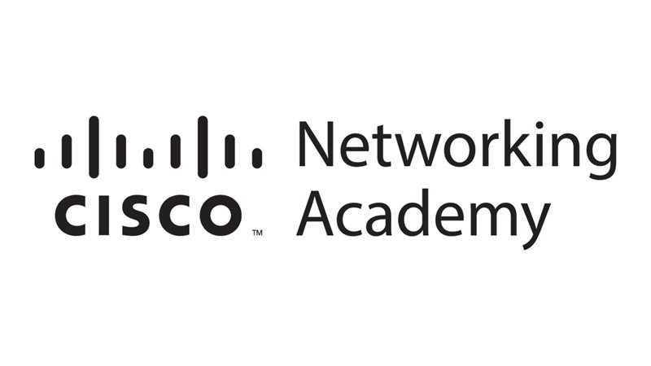
Data Analysis Essentials
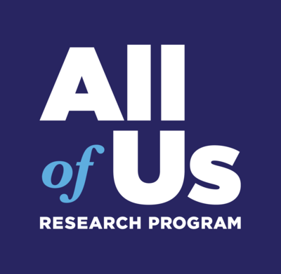
Data Engineering For All Of Us- Precision Medicine Hackathon

Responsible AI Hackathon
Data Analysis
Java Developer
Python Workshop

Artificial Intelligence And Machine Learning
IOT Workshop
Visualizations
[Tableau] Mag-6 Earthquakes (1900-2013)
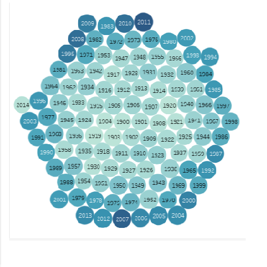
Maximum magnitude earthquake by years
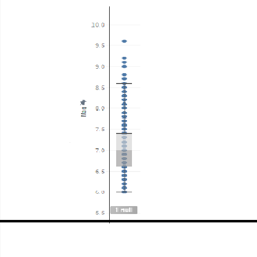
Maximum, Minimum and Median of earhtquake
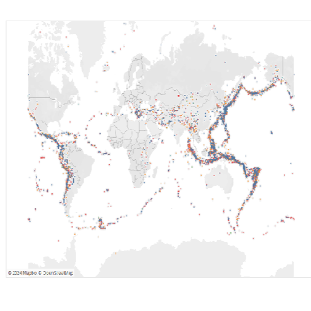
Cluster of maximum magnitude
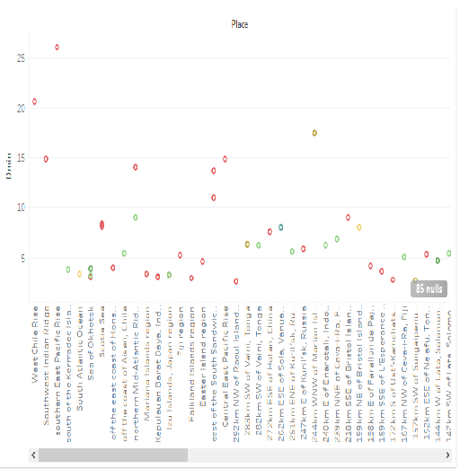
Top 100 places having maximum spread from epicentre
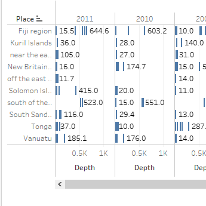
Top 10 places having maximum earthquake count
[Tableau]Jobs availability-millenials vs boomers
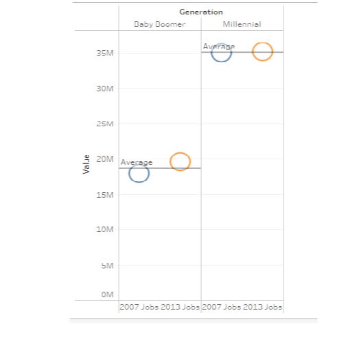
Total jobs in 2007 and 2013
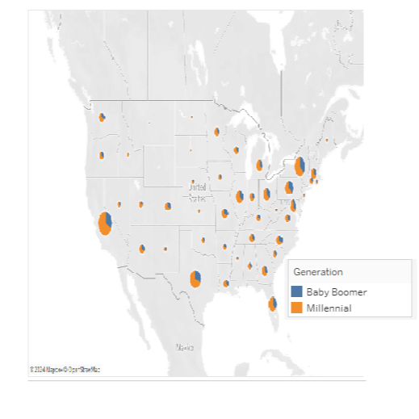
Map visualization for jobs using generation
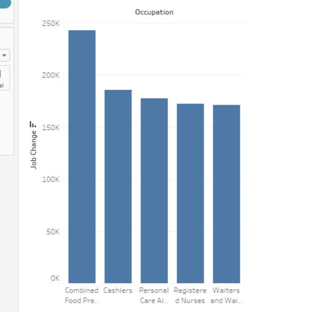
Top 5 occupation having maximum job change
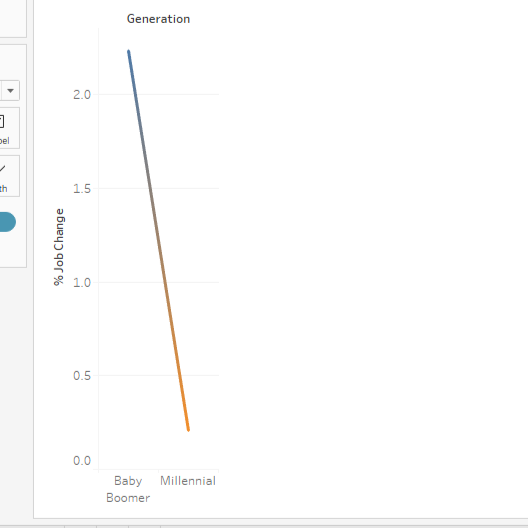
% job change by generation